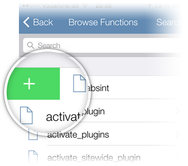

Welcome!
Ever wish you could search for WordPress functions all from your device? That is exactly what WPSeek Mobile allows you to do as it acts as the first WordPress-centric search engine and function reference.
Swipe left to be introduced to some feature highlights.
Quick Access
Swipe left or right on any function item to add or remove an item to or from your Quick Access List.
Your personal Quick Access List is permanent and can be accessed through the app's front page or side panel.

Swipe left to see more feature highlights.
Hot Off The Press
The "Hot" section let's you see latest introduced functions in the the most recent WordPress release at a glance.
Never fall behind in WordPress code again!